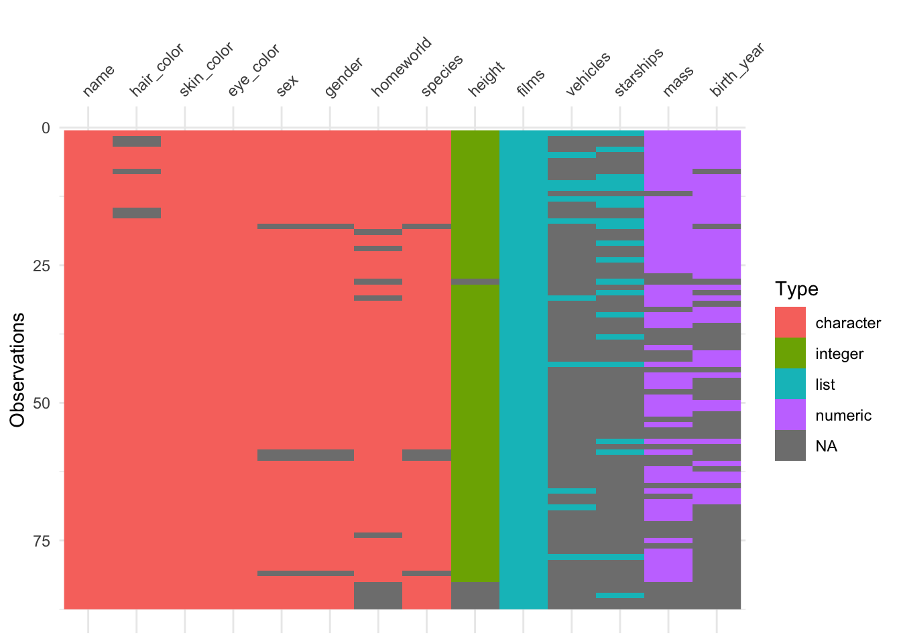

Chapter 19 Appendix B: Data wrangling
In this lecture, we will take a look at how to wrangle data using the dplyr package. Again, getting our data into shape is something we’ll need to do throughout the course, so it’s worth spending some time getting a good sense for how this works. The nice thing about R is that (thanks to the tidyverse), both visualization and data wrangling are particularly powerful.
19.1 Learning goals
- Review R basics (incl. variable modes, data types, operators, control flow, and functions).
- Learn how the pipe operator
%>%works. - See different ways for getting a sense of one’s data.
- Master key data manipulation verbs from the
dplyrpackage (incl.filter(),arrange(),rename(),relocate(),select(),mutate()) as well as the helper functionsacross()andwhere().
19.2 Load packages
Let’s first load the packages that we need for this chapter.
library("knitr") # for rendering the RMarkdown file
library("skimr") # for visualizing data
library("visdat") # for visualizing data
library("DT") # for visualizing data ## Warning: package 'DT' was built under R version 4.3.1## Warning: package 'ggplot2' was built under R version 4.3.1## Warning: package 'dplyr' was built under R version 4.3.119.3 Some R basics
To test your knowledge of the R basics, I recommend taking the free interactive tutorial on datacamp: Introduction to R. Here, I will just give a very quick overview of some of the basics.
19.3.1 Modes
Variables in R can have different modes. Table 19.1 shows the most common ones.
| name | example |
|---|---|
| numeric | 1, 3, 48 |
| character | 'Steve', 'a', '78' |
| logical | TRUE, FALSE |
| not available | NA |
For characters you can either use " or '. R has a number of functions to convert a variable from one mode to another. NA is used for missing values.
chr "1" num 1 Factor w/ 1 level "1": 1 chr "1"[1] TRUEThe str() function displays the structure of an R object. Here, it shows us what mode the variable is.
19.3.2 Data types
R has a number of different data types. Table 19.2 shows the ones you’re most likely to come across (taken from this source):
| name | description |
|---|---|
| vector | list of values with of the same variable mode |
| factor | for ordinal variables |
| matrix | 2D data structure |
| array | same as matrix for higher dimensional data |
| data frame | similar to matrix but with column names |
| list | flexible type that can contain different other variable types |
19.3.2.1 Vectors
We build vectors using the concatenate function c(), and we use [] to access one or more elements of a vector.
[1] 4[1] 1 4[1] 1 5In R (unlike in Python for example), 1 refers to the first element of a vector (or list).
19.3.2.2 Matrix
We build a matrix using the matrix() function, and we use [] to access its elements.
[,1] [,2]
[1,] 1 4
[2,] 2 5
[3,] 3 6[1] 4[1] 1 4[1] 1 2 3 [,1] [,2]
[1,] 2 5
[2,] 3 6Note how we use an empty placeholder to indicate that we want to select all the values in a row or column, and - to indicate that we want to remove something.
19.3.2.4 Data frame
df = tibble(participant_id = c(1, 2, 3),
participant_name = c("Leia", "Luke", "Darth")) # make the data frame
df # the complete data frame# A tibble: 3 × 2
participant_id participant_name
<dbl> <chr>
1 1 Leia
2 2 Luke
3 3 Darth # A tibble: 1 × 1
participant_name
<chr>
1 Leia [1] 1 2 3[1] 1 2 3[1] "Luke"[1] "Luke"We’ll use data frames a lot. Data frames are like a matrix with column names. Data frames are also more general than matrices in that different columns can have different modes. For example, one column might be a character, another one numeric, and another one a factor.
Here we used the tibble() function to create the data frame. A tibble is almost the same as a data frame but it has better defaults for formatting output in the console (more information on tibbles is here).
19.3.2.5 Lists
l.mixed = list(number = 1,
character = "2",
factor = factor(3),
matrix = matrix(1:4, ncol = 2),
df = tibble(x = c(1, 2), y = c(3, 4)))
l.mixed$number
[1] 1
$character
[1] "2"
$factor
[1] 3
Levels: 3
$matrix
[,1] [,2]
[1,] 1 3
[2,] 2 4
$df
# A tibble: 2 × 2
x y
<dbl> <dbl>
1 1 3
2 2 4[1] "2"[1] "2"[1] "2"Lists are a very flexible data format. You can put almost anything in a list.
19.3.3 Operators
Table 19.3 shows the comparison operators that result in logical outputs.
| symbol | name |
|---|---|
== |
equal to |
!= |
not equal to |
>, < |
greater/less than |
>=, <= |
greater/less than or equal |
&, |, ! |
logical operators: and, or, not |
%in% |
checks whether an element is in an object |
The %in% operator is very useful, and we can use it like so:
[1] TRUE[1] TRUE FALSEIt’s particularly useful for filtering data as we will see below.
19.3.4 Control flow
19.3.4.1 if-then
number = 3
if (number == 1) {
print("The number is 1.")
} else if (number == 2) {
print("The number is 2.")
} else {
print("The number is neither 1 nor 2.")
}[1] "The number is neither 1 nor 2."As a shorthand version, we can also use the ifelse() function like so:
[1] "false"19.3.5 Functions
fun.add_two_numbers = function(a, b){
x = a + b
return(str_c("The result is ", x))
}
fun.add_two_numbers(1, 2)[1] "The result is 3"I’ve used the str_c() function here to concatenate the string with the number. (R converts the number x into a string for us.) Note, R functions can only return a single object. However, this object can be a list (which can contain anything).
19.3.5.1 Some often used functions
| name | description |
|---|---|
length() |
length of an object |
dim() |
dimensions of an object (e.g. number of rows and columns) |
rm() |
remove an object |
seq() |
generate a sequence of numbers |
rep() |
repeat something n times |
max() |
maximum |
min() |
minimum |
which.max() |
index of the maximum |
which.min() |
index of the maximum |
mean() |
mean |
median() |
median |
sum() |
sum |
var() |
variance |
sd() |
standard deviation |
19.3.6 The pipe operator %>%

Figure 19.1: Inspiration for the magrittr package name.

Figure 19.2: The magrittr package logo.
The pipe operator %>% is a special operator introduced in the magrittr package. It is used heavily in the tidyverse. The basic idea is simple: this operator allows us to “pipe” several functions into one long chain that matches the order in which we want to do stuff.
Let’s consider the following example of making and eating a cake (thanks to https://twitter.com/dmi3k/status/1191824875842879489?s=09). This would be the traditional way of writing some code:
eat(
slice(
bake(
put(
pour(
mix(ingredients),
into = baking_form),
into = oven),
time = 30),
pieces = 6),
1)To see what’s going on here, we need to read the code inside out. That is, we have to start in the innermost bracket, and then work our way outward. However, there is a natural causal ordering to these steps and wouldn’t it be nice if we could just write code in that order? Thanks to the pipe operator %>% we can! Here is the same example using the pipe:
ingredients %>%
mix %>%
pour(into = baking_form) %>%
put(into = oven) %>%
bake(time = 30) %>%
slice(pieces = 6) %>%
eat(1)This code is much easier to read and write, since it represents the order in which we want to do things!
Abstractly, the pipe operator does the following:
f(x)can be rewritten asx %>% f()
For example, in standard R, we would write:
[1] 6With the pipe, we can rewrite this as:
[1] 6This doesn’t seem super useful yet, but just hold on a little longer.
f(x, y)can be rewritten asx %>% f(y)
So, we could rewrite the following standard R code …
[1] 3.141593… by using the pipe:
[1] 3.141593Here is another example:
[1] 7[1] 7The pipe operator inserts the result of the previous computation as a first element into the next computation. So, a %>% sum(b) is equivalent to sum(a, b). We can also specify to insert the result at a different position via the . operator. For example:
[1] 1 2 3 4 5 6 7 8 9 10Here, I used the . operator to specify that I woud like to insert the result of b where I’ve put the . in the seq() function.
f(x, y)can be rewritten asy %>% f(x, .)
Still not to thrilled about the pipe? We can keep going though (and I’m sure you’ll be convinced eventually.)
h(g(f(x)))can be rewritten asx %>% f() %>% g() %>% h()
For example, consider that we want to calculate the root mean squared error (RMSE) between prediction and data.
Here is how the RMSE is defined:
\[ \text{RMSE} = \sqrt\frac{\sum_{i=1}^n(\hat{y}_i-y_i)^2}{n} \] where \(\hat{y}_i\) denotes the prediction, and \(y_i\) the actually observed value.
In base R, we would do the following.
data = c(1, 3, 4, 2, 5)
prediction = c(1, 2, 2, 1, 4)
# calculate root mean squared error
rmse = sqrt(mean((prediction-data)^2))
print(rmse)[1] 1.183216Using the pipe operator makes the operation more intuitive:
data = c(1, 3, 4, 2, 5)
prediction = c(1, 2, 2, 1, 4)
# calculate root mean squared error the pipe way
rmse = (prediction-data)^2 %>%
mean() %>%
sqrt() %>%
print() [1] 1.183216First, we calculate the squared error, then we take the mean, then the square root, and then print the result.
The pipe operator %>% is similar to the + used in ggplot2. It allows us to take step-by-step actions in a way that fits the causal ordering of how we want to do things.
Tip: The keyboard shortcut for the pipe operator is:
cmd/ctrl + shift + m
Definitely learn this one – we’ll use the pipe a lot!!
Tip: Code is generally easier to read when the pipe
%>%is at the end of a line (just like the+inggplot2).
A key advantage of using the pipe is that you don’t have to save intermediate computations as new variables and this helps to keep your environment nice and clean!
19.4 A quick note on naming things
Personally, I like to name things in a (pretty) consistent way so that I have no trouble finding stuff even when I open up a project that I haven’t worked on for a while. I try to use the following naming conventions:
| name | use |
|---|---|
| df.thing | for data frames |
| l.thing | for lists |
| fun.thing | for functions |
| tmp.thing | for temporary variables |
19.5 Looking at data
The package dplyr which we loaded as part of the tidyverse, includes a data set with information about starwars characters. Let’s store this as df.starwars.
Note: Unlike in other languages (such as Python or Matlab), a
.in a variable name has no special meaning and can just be used as part of the name. I’ve useddfhere to indicate for myself that this variable is a data frame. Before visualizing the data, it’s often useful to take a quick direct look at the data.
There are several ways of taking a look at data in R. Personally, I like to look at the data within RStudio’s data viewer. To do so, you can:
- click on the
df.starwarsvariable in the “Environment” tab
- type
View(df.starwars)in the console - move your mouse over (or select) the variable in the editor (or console) and hit
F2
I like the F2 route the best as it’s fast and flexible.
Sometimes it’s also helpful to look at data in the console instead of the data viewer. Particularly when the data is very large, the data viewer can be sluggish.
Here are some useful functions:
19.5.1 head()
Without any extra arguments specified, head() shows the top six rows of the data.
# A tibble: 6 × 14
name height mass hair_color skin_color eye_color birth_year sex gender
<chr> <int> <dbl> <chr> <chr> <chr> <dbl> <chr> <chr>
1 Luke Sky… 172 77 blond fair blue 19 male mascu…
2 C-3PO 167 75 <NA> gold yellow 112 none mascu…
3 R2-D2 96 32 <NA> white, bl… red 33 none mascu…
4 Darth Va… 202 136 none white yellow 41.9 male mascu…
5 Leia Org… 150 49 brown light brown 19 fema… femin…
6 Owen Lars 178 120 brown, gr… light blue 52 male mascu…
# ℹ 5 more variables: homeworld <chr>, species <chr>, films <list>,
# vehicles <list>, starships <list>19.5.2 glimpse()
glimpse() is helpful when the data frame has many columns. The data is shown in a transposed way with columns as rows.
Rows: 87
Columns: 14
$ name <chr> "Luke Skywalker", "C-3PO", "R2-D2", "Darth Vader", "Leia Or…
$ height <int> 172, 167, 96, 202, 150, 178, 165, 97, 183, 182, 188, 180, 2…
$ mass <dbl> 77.0, 75.0, 32.0, 136.0, 49.0, 120.0, 75.0, 32.0, 84.0, 77.…
$ hair_color <chr> "blond", NA, NA, "none", "brown", "brown, grey", "brown", N…
$ skin_color <chr> "fair", "gold", "white, blue", "white", "light", "light", "…
$ eye_color <chr> "blue", "yellow", "red", "yellow", "brown", "blue", "blue",…
$ birth_year <dbl> 19.0, 112.0, 33.0, 41.9, 19.0, 52.0, 47.0, NA, 24.0, 57.0, …
$ sex <chr> "male", "none", "none", "male", "female", "male", "female",…
$ gender <chr> "masculine", "masculine", "masculine", "masculine", "femini…
$ homeworld <chr> "Tatooine", "Tatooine", "Naboo", "Tatooine", "Alderaan", "T…
$ species <chr> "Human", "Droid", "Droid", "Human", "Human", "Human", "Huma…
$ films <list> <"A New Hope", "The Empire Strikes Back", "Return of the J…
$ vehicles <list> <"Snowspeeder", "Imperial Speeder Bike">, <>, <>, <>, "Imp…
$ starships <list> <"X-wing", "Imperial shuttle">, <>, <>, "TIE Advanced x1",…19.5.3 distinct()
distinct() shows all the distinct values for a character or factor column.
# A tibble: 38 × 1
species
<chr>
1 Human
2 Droid
3 Wookiee
4 Rodian
5 Hutt
6 <NA>
7 Yoda's species
8 Trandoshan
9 Mon Calamari
10 Ewok
# ℹ 28 more rows19.5.4 count()
count() shows a count of all the different distinct values in a column.
# A tibble: 15 × 2
eye_color n
<chr> <int>
1 black 10
2 blue 19
3 blue-gray 1
4 brown 21
5 dark 1
6 gold 1
7 green, yellow 1
8 hazel 3
9 orange 8
10 pink 1
11 red 5
12 red, blue 1
13 unknown 3
14 white 1
15 yellow 11It’s possible to do grouped counts by combining several variables.
# A tibble: 10 × 3
eye_color gender n
<chr> <chr> <int>
1 black feminine 2
2 black masculine 8
3 blue feminine 6
4 blue masculine 12
5 blue <NA> 1
6 blue-gray masculine 1
7 brown feminine 4
8 brown masculine 15
9 brown <NA> 2
10 dark masculine 119.5.5 datatable()
For RMardkown files specifically, we can use the datatable() function from the DT package to get an interactive table widget.
19.5.6 Other tools for taking a quick look at data
19.5.6.1 vis_dat()
The vis_dat() function from the visdat package, gives a visual summary that makes it easy to see the variable types and whether there are missing values in the data.

When R loads packages, functions loaded in earlier packages are
overwritten by functions of the same name from later packages. This
means that the order in which packages are loaded matters. To make sure
that a function from the correct package is used, you can use the
package_name::function_name() construction. This way, the
function_name() from the package_name is used,
rather than the same function from a different package.
This is why, in general, I recommend to load the tidyverse package last (since it contains a large number of functions that we use a lot).
19.5.6.2 skim()
The skim() function from the skimr package provides a nice overview of the data, separated by variable types.
| Name | df.starwars |
| Number of rows | 87 |
| Number of columns | 14 |
| _______________________ | |
| Column type frequency: | |
| character | 8 |
| list | 3 |
| numeric | 3 |
| ________________________ | |
| Group variables | None |
Variable type: character
| skim_variable | n_missing | complete_rate | min | max | empty | n_unique | whitespace |
|---|---|---|---|---|---|---|---|
| name | 0 | 1.00 | 3 | 21 | 0 | 87 | 0 |
| hair_color | 5 | 0.94 | 4 | 13 | 0 | 11 | 0 |
| skin_color | 0 | 1.00 | 3 | 19 | 0 | 31 | 0 |
| eye_color | 0 | 1.00 | 3 | 13 | 0 | 15 | 0 |
| sex | 4 | 0.95 | 4 | 14 | 0 | 4 | 0 |
| gender | 4 | 0.95 | 8 | 9 | 0 | 2 | 0 |
| homeworld | 10 | 0.89 | 4 | 14 | 0 | 48 | 0 |
| species | 4 | 0.95 | 3 | 14 | 0 | 37 | 0 |
Variable type: list
| skim_variable | n_missing | complete_rate | n_unique | min_length | max_length |
|---|---|---|---|---|---|
| films | 0 | 1 | 24 | 1 | 7 |
| vehicles | 0 | 1 | 11 | 0 | 2 |
| starships | 0 | 1 | 16 | 0 | 5 |
Variable type: numeric
| skim_variable | n_missing | complete_rate | mean | sd | p0 | p25 | p50 | p75 | p100 | hist |
|---|---|---|---|---|---|---|---|---|---|---|
| height | 6 | 0.93 | 174.60 | 34.77 | 66 | 167.0 | 180 | 191.0 | 264 | ▂▁▇▅▁ |
| mass | 28 | 0.68 | 97.31 | 169.46 | 15 | 55.6 | 79 | 84.5 | 1358 | ▇▁▁▁▁ |
| birth_year | 44 | 0.49 | 87.57 | 154.69 | 8 | 35.0 | 52 | 72.0 | 896 | ▇▁▁▁▁ |
19.5.6.3 dfSummary()
The summarytools package is another great package for taking a look at the data. It renders a nice html output for the data frame including a lot of helpful information. You can find out more about this package here.
df.starwars %>%
select(where(~ !is.list(.))) %>% # this removes all list columns
summarytools::dfSummary() %>%
summarytools::view()Note: The summarytools::view() function will not show up here in the html. It generates a summary of the data that is displayed in the Viewer in RStudio.
Once we’ve taken a look at the data, the next step would be to visualize relationships between variables of interest.
19.6 Wrangling data
We use the functions in the package dplyr to manipulate our data.
19.6.1 filter()
filter() lets us apply logical (and other) operators (see Table 19.3) to subset the data. Here, I’ve filtered out the masculine characters.
# A tibble: 66 × 14
name height mass hair_color skin_color eye_color birth_year sex gender
<chr> <int> <dbl> <chr> <chr> <chr> <dbl> <chr> <chr>
1 Luke Sk… 172 77 blond fair blue 19 male mascu…
2 C-3PO 167 75 <NA> gold yellow 112 none mascu…
3 R2-D2 96 32 <NA> white, bl… red 33 none mascu…
4 Darth V… 202 136 none white yellow 41.9 male mascu…
5 Owen La… 178 120 brown, gr… light blue 52 male mascu…
6 R5-D4 97 32 <NA> white, red red NA none mascu…
7 Biggs D… 183 84 black light brown 24 male mascu…
8 Obi-Wan… 182 77 auburn, w… fair blue-gray 57 male mascu…
9 Anakin … 188 84 blond fair blue 41.9 male mascu…
10 Wilhuff… 180 NA auburn, g… fair blue 64 male mascu…
# ℹ 56 more rows
# ℹ 5 more variables: homeworld <chr>, species <chr>, films <list>,
# vehicles <list>, starships <list>We can combine multiple conditions in the same call. Here, I’ve filtered out masculine characters, whose height is greater than the median height (i.e. they are in the top 50 percentile), and whose mass was not NA.
# A tibble: 26 × 14
name height mass hair_color skin_color eye_color birth_year sex gender
<chr> <int> <dbl> <chr> <chr> <chr> <dbl> <chr> <chr>
1 Darth V… 202 136 none white yellow 41.9 male mascu…
2 Biggs D… 183 84 black light brown 24 male mascu…
3 Obi-Wan… 182 77 auburn, w… fair blue-gray 57 male mascu…
4 Anakin … 188 84 blond fair blue 41.9 male mascu…
5 Chewbac… 228 112 brown unknown blue 200 male mascu…
6 Boba Fe… 183 78.2 black fair brown 31.5 male mascu…
7 IG-88 200 140 none metal red 15 none mascu…
8 Bossk 190 113 none green red 53 male mascu…
9 Qui-Gon… 193 89 brown fair blue 92 male mascu…
10 Nute Gu… 191 90 none mottled g… red NA male mascu…
# ℹ 16 more rows
# ℹ 5 more variables: homeworld <chr>, species <chr>, films <list>,
# vehicles <list>, starships <list>Many functions like mean(), median(), var(), sd(), sum() have the argument na.rm which is set to FALSE by default. I set the argument to TRUE here (or T for short), which means that the NA values are ignored, and the median() is calculated based on the remaining values.
You can use , and & interchangeably in filter(). Make sure to use parentheses when combining several logical operators to indicate which logical operation should be performed first:
df.starwars %>%
filter((skin_color %in% c("dark", "pale") | sex == "hermaphroditic") & height > 170)# A tibble: 10 × 14
name height mass hair_color skin_color eye_color birth_year sex gender
<chr> <int> <dbl> <chr> <chr> <chr> <dbl> <chr> <chr>
1 Jabba D… 175 1358 <NA> green-tan… orange 600 herm… mascu…
2 Lando C… 177 79 black dark brown 31 male mascu…
3 Quarsh … 183 NA black dark brown 62 male mascu…
4 Bib For… 180 NA none pale pink NA male mascu…
5 Mace Wi… 188 84 none dark brown 72 male mascu…
6 Ki-Adi-… 198 82 white pale yellow 92 male mascu…
7 Adi Gal… 184 50 none dark blue NA fema… femin…
8 Saesee … 188 NA none pale orange NA male mascu…
9 Gregar … 185 85 black dark brown NA <NA> <NA>
10 Sly Moo… 178 48 none pale white NA <NA> <NA>
# ℹ 5 more variables: homeworld <chr>, species <chr>, films <list>,
# vehicles <list>, starships <list>The starwars characters that have either a "dark" or a "pale" skin tone, or whose sex is "hermaphroditic", and whose height is at least 170 cm. The %in% operator is useful when there are multiple options. Instead of skin_color %in% c("dark", "pale"), I could have also written skin_color == "dark" | skin_color == "pale" but this gets cumbersome as the number of options increases.
19.6.2 arrange()
arrange() allows us to sort the values in a data frame by one or more column entries.
# A tibble: 87 × 14
name height mass hair_color skin_color eye_color birth_year sex gender
<chr> <int> <dbl> <chr> <chr> <chr> <dbl> <chr> <chr>
1 Mon Mot… 150 NA auburn fair blue 48 fema… femin…
2 Wilhuff… 180 NA auburn, g… fair blue 64 male mascu…
3 Obi-Wan… 182 77 auburn, w… fair blue-gray 57 male mascu…
4 Bail Pr… 191 NA black tan brown 67 male mascu…
5 Gregar … 185 85 black dark brown NA <NA> <NA>
6 Biggs D… 183 84 black light brown 24 male mascu…
7 Boba Fe… 183 78.2 black fair brown 31.5 male mascu…
8 Quarsh … 183 NA black dark brown 62 male mascu…
9 Jango F… 183 79 black tan brown 66 male mascu…
10 Lando C… 177 79 black dark brown 31 male mascu…
# ℹ 77 more rows
# ℹ 5 more variables: homeworld <chr>, species <chr>, films <list>,
# vehicles <list>, starships <list>Here, I’ve sorted the data frame first by hair_color, and then by height. I’ve used the desc() function to sort height in descending order. Bail Prestor Organa is the tallest black character in starwars.
19.6.3 rename()
rename() renames column names.
# A tibble: 87 × 14
person height mass_kg hair_color skin_color eye_color birth_year sex gender
<chr> <int> <dbl> <chr> <chr> <chr> <dbl> <chr> <chr>
1 Luke … 172 77 blond fair blue 19 male mascu…
2 C-3PO 167 75 <NA> gold yellow 112 none mascu…
3 R2-D2 96 32 <NA> white, bl… red 33 none mascu…
4 Darth… 202 136 none white yellow 41.9 male mascu…
5 Leia … 150 49 brown light brown 19 fema… femin…
6 Owen … 178 120 brown, gr… light blue 52 male mascu…
7 Beru … 165 75 brown light blue 47 fema… femin…
8 R5-D4 97 32 <NA> white, red red NA none mascu…
9 Biggs… 183 84 black light brown 24 male mascu…
10 Obi-W… 182 77 auburn, w… fair blue-gray 57 male mascu…
# ℹ 77 more rows
# ℹ 5 more variables: homeworld <chr>, species <chr>, films <list>,
# vehicles <list>, starships <list>The new variable names goes on the LHS of the= sign, and the old name on the RHS.
To rename all variables at the same time use rename_with():
# A tibble: 87 × 14
NAME HEIGHT MASS HAIR_COLOR SKIN_COLOR EYE_COLOR BIRTH_YEAR SEX GENDER
<chr> <int> <dbl> <chr> <chr> <chr> <dbl> <chr> <chr>
1 Luke Sk… 172 77 blond fair blue 19 male mascu…
2 C-3PO 167 75 <NA> gold yellow 112 none mascu…
3 R2-D2 96 32 <NA> white, bl… red 33 none mascu…
4 Darth V… 202 136 none white yellow 41.9 male mascu…
5 Leia Or… 150 49 brown light brown 19 fema… femin…
6 Owen La… 178 120 brown, gr… light blue 52 male mascu…
7 Beru Wh… 165 75 brown light blue 47 fema… femin…
8 R5-D4 97 32 <NA> white, red red NA none mascu…
9 Biggs D… 183 84 black light brown 24 male mascu…
10 Obi-Wan… 182 77 auburn, w… fair blue-gray 57 male mascu…
# ℹ 77 more rows
# ℹ 5 more variables: HOMEWORLD <chr>, SPECIES <chr>, FILMS <list>,
# VEHICLES <list>, STARSHIPS <list>Notice that I used the ~ here in the function call. I will explain what this does shortly.
19.6.4 relocate()
relocate() moves columns. For example, the following piece of code moves the species column to the front of the data frame:
# A tibble: 87 × 14
species name height mass hair_color skin_color eye_color birth_year sex
<chr> <chr> <int> <dbl> <chr> <chr> <chr> <dbl> <chr>
1 Human Luke S… 172 77 blond fair blue 19 male
2 Droid C-3PO 167 75 <NA> gold yellow 112 none
3 Droid R2-D2 96 32 <NA> white, bl… red 33 none
4 Human Darth … 202 136 none white yellow 41.9 male
5 Human Leia O… 150 49 brown light brown 19 fema…
6 Human Owen L… 178 120 brown, gr… light blue 52 male
7 Human Beru W… 165 75 brown light blue 47 fema…
8 Droid R5-D4 97 32 <NA> white, red red NA none
9 Human Biggs … 183 84 black light brown 24 male
10 Human Obi-Wa… 182 77 auburn, w… fair blue-gray 57 male
# ℹ 77 more rows
# ℹ 5 more variables: gender <chr>, homeworld <chr>, films <list>,
# vehicles <list>, starships <list>We could also move the species column after the name column like so:
# A tibble: 87 × 14
name species height mass hair_color skin_color eye_color birth_year sex
<chr> <chr> <int> <dbl> <chr> <chr> <chr> <dbl> <chr>
1 Luke S… Human 172 77 blond fair blue 19 male
2 C-3PO Droid 167 75 <NA> gold yellow 112 none
3 R2-D2 Droid 96 32 <NA> white, bl… red 33 none
4 Darth … Human 202 136 none white yellow 41.9 male
5 Leia O… Human 150 49 brown light brown 19 fema…
6 Owen L… Human 178 120 brown, gr… light blue 52 male
7 Beru W… Human 165 75 brown light blue 47 fema…
8 R5-D4 Droid 97 32 <NA> white, red red NA none
9 Biggs … Human 183 84 black light brown 24 male
10 Obi-Wa… Human 182 77 auburn, w… fair blue-gray 57 male
# ℹ 77 more rows
# ℹ 5 more variables: gender <chr>, homeworld <chr>, films <list>,
# vehicles <list>, starships <list>19.6.5 select()
select() allows us to select a subset of the columns in the data frame.
# A tibble: 87 × 3
name height mass
<chr> <int> <dbl>
1 Luke Skywalker 172 77
2 C-3PO 167 75
3 R2-D2 96 32
4 Darth Vader 202 136
5 Leia Organa 150 49
6 Owen Lars 178 120
7 Beru Whitesun Lars 165 75
8 R5-D4 97 32
9 Biggs Darklighter 183 84
10 Obi-Wan Kenobi 182 77
# ℹ 77 more rowsWe can select multiple columns using the (from:to) syntax:
# A tibble: 87 × 7
name height mass hair_color skin_color eye_color birth_year
<chr> <int> <dbl> <chr> <chr> <chr> <dbl>
1 Luke Skywalker 172 77 blond fair blue 19
2 C-3PO 167 75 <NA> gold yellow 112
3 R2-D2 96 32 <NA> white, bl… red 33
4 Darth Vader 202 136 none white yellow 41.9
5 Leia Organa 150 49 brown light brown 19
6 Owen Lars 178 120 brown, grey light blue 52
7 Beru Whitesun Lars 165 75 brown light blue 47
8 R5-D4 97 32 <NA> white, red red NA
9 Biggs Darklighter 183 84 black light brown 24
10 Obi-Wan Kenobi 182 77 auburn, white fair blue-gray 57
# ℹ 77 more rowsOr use a variable for column selection:
columns = c("name", "height", "species")
df.starwars %>%
select(one_of(columns)) # useful when using a variable for column selection# A tibble: 87 × 3
name height species
<chr> <int> <chr>
1 Luke Skywalker 172 Human
2 C-3PO 167 Droid
3 R2-D2 96 Droid
4 Darth Vader 202 Human
5 Leia Organa 150 Human
6 Owen Lars 178 Human
7 Beru Whitesun Lars 165 Human
8 R5-D4 97 Droid
9 Biggs Darklighter 183 Human
10 Obi-Wan Kenobi 182 Human
# ℹ 77 more rowsWe can also deselect (multiple) columns:
# A tibble: 87 × 6
height mass hair_color skin_color eye_color starships
<int> <dbl> <chr> <chr> <chr> <list>
1 172 77 blond fair blue <chr [2]>
2 167 75 <NA> gold yellow <chr [0]>
3 96 32 <NA> white, blue red <chr [0]>
4 202 136 none white yellow <chr [1]>
5 150 49 brown light brown <chr [0]>
6 178 120 brown, grey light blue <chr [0]>
7 165 75 brown light blue <chr [0]>
8 97 32 <NA> white, red red <chr [0]>
9 183 84 black light brown <chr [1]>
10 182 77 auburn, white fair blue-gray <chr [5]>
# ℹ 77 more rowsAnd select columns by partially matching the column name:
# A tibble: 87 × 4
hair_color skin_color eye_color birth_year
<chr> <chr> <chr> <dbl>
1 blond fair blue 19
2 <NA> gold yellow 112
3 <NA> white, blue red 33
4 none white yellow 41.9
5 brown light brown 19
6 brown, grey light blue 52
7 brown light blue 47
8 <NA> white, red red NA
9 black light brown 24
10 auburn, white fair blue-gray 57
# ℹ 77 more rows# A tibble: 87 × 3
height hair_color homeworld
<int> <chr> <chr>
1 172 blond Tatooine
2 167 <NA> Tatooine
3 96 <NA> Naboo
4 202 none Tatooine
5 150 brown Alderaan
6 178 brown, grey Tatooine
7 165 brown Tatooine
8 97 <NA> Tatooine
9 183 black Tatooine
10 182 auburn, white Stewjon
# ℹ 77 more rowsWe can rename some of the columns using select() like so:
# A tibble: 87 × 3
person height mass_kg
<chr> <int> <dbl>
1 Luke Skywalker 172 77
2 C-3PO 167 75
3 R2-D2 96 32
4 Darth Vader 202 136
5 Leia Organa 150 49
6 Owen Lars 178 120
7 Beru Whitesun Lars 165 75
8 R5-D4 97 32
9 Biggs Darklighter 183 84
10 Obi-Wan Kenobi 182 77
# ℹ 77 more rows19.6.5.1 where()
where() is a useful helper function that comes in handy, for example, when we want to select columns based on their data type.
# A tibble: 87 × 3
height mass birth_year
<int> <dbl> <dbl>
1 172 77 19
2 167 75 112
3 96 32 33
4 202 136 41.9
5 150 49 19
6 178 120 52
7 165 75 47
8 97 32 NA
9 183 84 24
10 182 77 57
# ℹ 77 more rowsThe following selects all columns that are not numeric:
# A tibble: 87 × 11
name hair_color skin_color eye_color sex gender homeworld species films
<chr> <chr> <chr> <chr> <chr> <chr> <chr> <chr> <lis>
1 Luke Sk… blond fair blue male mascu… Tatooine Human <chr>
2 C-3PO <NA> gold yellow none mascu… Tatooine Droid <chr>
3 R2-D2 <NA> white, bl… red none mascu… Naboo Droid <chr>
4 Darth V… none white yellow male mascu… Tatooine Human <chr>
5 Leia Or… brown light brown fema… femin… Alderaan Human <chr>
6 Owen La… brown, gr… light blue male mascu… Tatooine Human <chr>
7 Beru Wh… brown light blue fema… femin… Tatooine Human <chr>
8 R5-D4 <NA> white, red red none mascu… Tatooine Droid <chr>
9 Biggs D… black light brown male mascu… Tatooine Human <chr>
10 Obi-Wan… auburn, w… fair blue-gray male mascu… Stewjon Human <chr>
# ℹ 77 more rows
# ℹ 2 more variables: vehicles <list>, starships <list>Note that I used ~ here to indicate that I’m creating an anonymous function to check whether column type is numeric. A one-sided formula (expression beginning with ~) is interpreted as function(x), and wherever x would go in the function is represented by ..
So, I could write the same code like so:
df.starwars %>%
select(where(function(x) !is.numeric(x))) # selects all columns that are not numeric# A tibble: 87 × 11
name hair_color skin_color eye_color sex gender homeworld species films
<chr> <chr> <chr> <chr> <chr> <chr> <chr> <chr> <lis>
1 Luke Sk… blond fair blue male mascu… Tatooine Human <chr>
2 C-3PO <NA> gold yellow none mascu… Tatooine Droid <chr>
3 R2-D2 <NA> white, bl… red none mascu… Naboo Droid <chr>
4 Darth V… none white yellow male mascu… Tatooine Human <chr>
5 Leia Or… brown light brown fema… femin… Alderaan Human <chr>
6 Owen La… brown, gr… light blue male mascu… Tatooine Human <chr>
7 Beru Wh… brown light blue fema… femin… Tatooine Human <chr>
8 R5-D4 <NA> white, red red none mascu… Tatooine Droid <chr>
9 Biggs D… black light brown male mascu… Tatooine Human <chr>
10 Obi-Wan… auburn, w… fair blue-gray male mascu… Stewjon Human <chr>
# ℹ 77 more rows
# ℹ 2 more variables: vehicles <list>, starships <list>For more details, take a look at the help file for select(), and this this great tutorial in which I learned about some of the more advanced ways of using select().
19.6.6 Practice 2
Create a data frame that:
- only has the species Human and Droid
- with the following data columns (in this order): name, species, birth_year, homeworld
- is arranged according to birth year (with the lowest entry at the top of the data frame)
- and has the name column renamed to person
19.6.7 mutate()
mutate() is used to change existing columns or make new ones.
df.starwars %>%
mutate(height = height / 100, # to get height in meters
bmi = mass / (height^2)) %>% # bmi = kg / (m^2)
select(name, height, mass, bmi)# A tibble: 87 × 4
name height mass bmi
<chr> <dbl> <dbl> <dbl>
1 Luke Skywalker 1.72 77 26.0
2 C-3PO 1.67 75 26.9
3 R2-D2 0.96 32 34.7
4 Darth Vader 2.02 136 33.3
5 Leia Organa 1.5 49 21.8
6 Owen Lars 1.78 120 37.9
7 Beru Whitesun Lars 1.65 75 27.5
8 R5-D4 0.97 32 34.0
9 Biggs Darklighter 1.83 84 25.1
10 Obi-Wan Kenobi 1.82 77 23.2
# ℹ 77 more rowsHere, I’ve calculated the bmi for the different starwars characters. I first mutated the height variable by going from cm to m, and then created the new column “bmi”.
A useful helper function for mutate() is ifelse() which is a shorthand for the if-else control flow (Section 19.3.4.1). Here is an example:
df.starwars %>%
mutate(height_categorical = ifelse(height > median(height, na.rm = T),
"tall",
"short")) %>%
select(name, contains("height"))# A tibble: 87 × 3
name height height_categorical
<chr> <int> <chr>
1 Luke Skywalker 172 short
2 C-3PO 167 short
3 R2-D2 96 short
4 Darth Vader 202 tall
5 Leia Organa 150 short
6 Owen Lars 178 short
7 Beru Whitesun Lars 165 short
8 R5-D4 97 short
9 Biggs Darklighter 183 tall
10 Obi-Wan Kenobi 182 tall
# ℹ 77 more rowsifelse() works in the following way: we first specify the condition, then what should be returned if the condition is true, and finally what should be returned otherwise. The more verbose version of the statement above would be: ifelse(test = height > median(height, na.rm = T), yes = "tall", no = "short")
In previous versions of dplyr (the package we use for data wrangling), there were a variety of additional mutate functions such as mutate_at(), mutate_if(), and mutate_all(). In the most recent version of dplyr, these additional functions have been deprecated, and replaced with the flexible across() helper function.
19.6.7.1 across()
across() allows us to use the syntax that we’ve learned for select() to select particular variables and apply a function to each of the selected variables.
For example, let’s imagine that we want to z-score a number of variables in our data frame. We can do this like so:
# A tibble: 87 × 14
name height[,1] mass[,1] hair_color skin_color eye_color birth_year[,1]
<chr> <dbl> <dbl> <chr> <chr> <chr> <dbl>
1 Luke Skyw… -0.0749 -0.120 blond fair blue -0.443
2 C-3PO -0.219 -0.132 <NA> gold yellow 0.158
3 R2-D2 -2.26 -0.385 <NA> white, bl… red -0.353
4 Darth Vad… 0.788 0.228 none white yellow -0.295
5 Leia Orga… -0.708 -0.285 brown light brown -0.443
6 Owen Lars 0.0976 0.134 brown, gr… light blue -0.230
7 Beru Whit… -0.276 -0.132 brown light blue -0.262
8 R5-D4 -2.23 -0.385 <NA> white, red red NA
9 Biggs Dar… 0.241 -0.0786 black light brown -0.411
10 Obi-Wan K… 0.213 -0.120 auburn, w… fair blue-gray -0.198
# ℹ 77 more rows
# ℹ 7 more variables: sex <chr>, gender <chr>, homeworld <chr>, species <chr>,
# films <list>, vehicles <list>, starships <list>In the .cols = argument of across(), I’ve specified what variables to mutate. In the .fns = argument, I’ve specified that I want to use the function scale. Note that I wrote the function without (). The .fns argument expects allows these possible values:
- the function itself, e.g.
mean - a call to the function with
.as a dummy argument,~ mean(.)(note the~before the function call) - a list of functions
list(mean = mean, median = ~ median(.))(where I’ve mixed both of the other ways)
We can also use names to create new columns:
df.starwars %>%
mutate(across(.cols = c(height, mass, birth_year),
.fns = scale,
.names = "{.col}_z")) %>%
select(name, contains("height"), contains("mass"), contains("birth_year"))# A tibble: 87 × 7
name height height_z[,1] mass mass_z[,1] birth_year birth_year_z[,1]
<chr> <int> <dbl> <dbl> <dbl> <dbl> <dbl>
1 Luke Skywal… 172 -0.0749 77 -0.120 19 -0.443
2 C-3PO 167 -0.219 75 -0.132 112 0.158
3 R2-D2 96 -2.26 32 -0.385 33 -0.353
4 Darth Vader 202 0.788 136 0.228 41.9 -0.295
5 Leia Organa 150 -0.708 49 -0.285 19 -0.443
6 Owen Lars 178 0.0976 120 0.134 52 -0.230
7 Beru Whites… 165 -0.276 75 -0.132 47 -0.262
8 R5-D4 97 -2.23 32 -0.385 NA NA
9 Biggs Darkl… 183 0.241 84 -0.0786 24 -0.411
10 Obi-Wan Ken… 182 0.213 77 -0.120 57 -0.198
# ℹ 77 more rowsI’ve specified how I’d like the new variables to be called by using the .names = argument of across(). {.col} stands of the name of the original column, and here I’ve just added _z to each column name for the scaled columns.
We can also apply several functions at the same time.
df.starwars %>%
mutate(across(.cols = c(height, mass, birth_year),
.fns = list(z = scale,
centered = ~ scale(., scale = FALSE)))) %>%
select(name, contains("height"), contains("mass"), contains("birth_year"))# A tibble: 87 × 10
name height height_z[,1] height_centered[,1] mass mass_z[,1]
<chr> <int> <dbl> <dbl> <dbl> <dbl>
1 Luke Skywalker 172 -0.0749 -2.60 77 -0.120
2 C-3PO 167 -0.219 -7.60 75 -0.132
3 R2-D2 96 -2.26 -78.6 32 -0.385
4 Darth Vader 202 0.788 27.4 136 0.228
5 Leia Organa 150 -0.708 -24.6 49 -0.285
6 Owen Lars 178 0.0976 3.40 120 0.134
7 Beru Whitesun Lars 165 -0.276 -9.60 75 -0.132
8 R5-D4 97 -2.23 -77.6 32 -0.385
9 Biggs Darklighter 183 0.241 8.40 84 -0.0786
10 Obi-Wan Kenobi 182 0.213 7.40 77 -0.120
# ℹ 77 more rows
# ℹ 4 more variables: mass_centered <dbl[,1]>, birth_year <dbl>,
# birth_year_z <dbl[,1]>, birth_year_centered <dbl[,1]>Here, I’ve created z-scored and centered (i.e. only subtracted the mean but didn’t divide by the standard deviation) versions of the height, mass, and birth_year columns in one go.
You can use the everything() helper function if you want to apply a function to all of the columns in your data frame.
df.starwars %>%
select(height, mass) %>%
mutate(across(.cols = everything(),
.fns = as.character)) # transform all columns to characters# A tibble: 87 × 2
height mass
<chr> <chr>
1 172 77
2 167 75
3 96 32
4 202 136
5 150 49
6 178 120
7 165 75
8 97 32
9 183 84
10 182 77
# ℹ 77 more rowsHere, I’ve selected some columns first, and then changed the mode to character in each of them.
Sometimes, you want to apply a function only to those columns that have a particular data type. This is where where() comes in handy!
For example, the following code changes all the numeric columns to character columns:
# A tibble: 87 × 14
name height mass hair_color skin_color eye_color birth_year sex gender
<chr> <chr> <chr> <chr> <chr> <chr> <chr> <chr> <chr>
1 Luke Sk… 172 77 blond fair blue 19 male mascu…
2 C-3PO 167 75 <NA> gold yellow 112 none mascu…
3 R2-D2 96 32 <NA> white, bl… red 33 none mascu…
4 Darth V… 202 136 none white yellow 41.9 male mascu…
5 Leia Or… 150 49 brown light brown 19 fema… femin…
6 Owen La… 178 120 brown, gr… light blue 52 male mascu…
7 Beru Wh… 165 75 brown light blue 47 fema… femin…
8 R5-D4 97 32 <NA> white, red red <NA> none mascu…
9 Biggs D… 183 84 black light brown 24 male mascu…
10 Obi-Wan… 182 77 auburn, w… fair blue-gray 57 male mascu…
# ℹ 77 more rows
# ℹ 5 more variables: homeworld <chr>, species <chr>, films <list>,
# vehicles <list>, starships <list>Or we could round all the numeric columns to one digit:
# A tibble: 87 × 14
name height mass hair_color skin_color eye_color birth_year sex gender
<chr> <dbl> <dbl> <chr> <chr> <chr> <dbl> <chr> <chr>
1 Luke Sk… 172 77 blond fair blue 19 male mascu…
2 C-3PO 167 75 <NA> gold yellow 112 none mascu…
3 R2-D2 96 32 <NA> white, bl… red 33 none mascu…
4 Darth V… 202 136 none white yellow 41.9 male mascu…
5 Leia Or… 150 49 brown light brown 19 fema… femin…
6 Owen La… 178 120 brown, gr… light blue 52 male mascu…
7 Beru Wh… 165 75 brown light blue 47 fema… femin…
8 R5-D4 97 32 <NA> white, red red NA none mascu…
9 Biggs D… 183 84 black light brown 24 male mascu…
10 Obi-Wan… 182 77 auburn, w… fair blue-gray 57 male mascu…
# ℹ 77 more rows
# ℹ 5 more variables: homeworld <chr>, species <chr>, films <list>,
# vehicles <list>, starships <list>19.6.8 Practice 3
Compute the body mass index for masculine characters who are human.
- select only the columns you need
- filter out only the rows you need
- make the new variable with the body mass index
- arrange the data frame starting with the highest body mass index
19.6.9 Summarizing data
OK, let’s load the starwars data set again:
A particularly powerful way of interacting with data is by grouping and summarizing it. summarize() returns a single value for each summary that we ask for:
df.starwars %>%
summarize(height_mean = mean(height, na.rm = T),
height_max = max(height, na.rm = T),
n = n())# A tibble: 1 × 3
height_mean height_max n
<dbl> <int> <int>
1 175. 264 87Here, I computed the mean height, the maximum height, and the total number of observations (using the function n()).
Let’s say we wanted to get a quick sense for how tall starwars characters from different species are. To do that, we combine grouping with summarizing:
# A tibble: 38 × 2
species height_mean
<chr> <dbl>
1 Aleena 79
2 Besalisk 198
3 Cerean 198
4 Chagrian 196
5 Clawdite 168
6 Droid 131.
7 Dug 112
8 Ewok 88
9 Geonosian 183
10 Gungan 209.
# ℹ 28 more rowsI’ve first used group_by() to group our data frame by the different species, and then used summarize() to calculate the mean height of each species.
It would also be useful to know how many observations there are in each group.
df.starwars %>%
group_by(species) %>%
summarize(height_mean = mean(height, na.rm = T),
group_size = n()) %>%
arrange(desc(group_size))# A tibble: 38 × 3
species height_mean group_size
<chr> <dbl> <int>
1 Human 178 35
2 Droid 131. 6
3 <NA> 175 4
4 Gungan 209. 3
5 Kaminoan 221 2
6 Mirialan 168 2
7 Twi'lek 179 2
8 Wookiee 231 2
9 Zabrak 173 2
10 Aleena 79 1
# ℹ 28 more rowsHere, I’ve used the n() function to get the number of observations in each group, and then I’ve arranged the data frame according to group size in descending order.
Note that n() always yields the number of observations in each group. If we don’t group the data, then we get the overall number of observations in our data frame (i.e. the number of rows).
So, Humans are the largest group in our data frame, followed by Droids (who are considerably smaller) and Gungans (who would make for good Basketball players).
Sometimes group_by() is also useful without summarizing the data. For example, we often want to z-score (i.e. normalize) data on the level of individual participants. To do so, we first group the data on the level of participants, and then use mutate() to scale the data. Here is an example:
# first let's generate some random data
set.seed(1) # to make this reproducible
df.summarize = tibble(participant = rep(1:3, each = 5),
judgment = sample(0:100, size = 15, replace = TRUE)) %>%
print()# A tibble: 15 × 2
participant judgment
<int> <int>
1 1 67
2 1 38
3 1 0
4 1 33
5 1 86
6 2 42
7 2 13
8 2 81
9 2 58
10 2 50
11 3 96
12 3 84
13 3 20
14 3 53
15 3 73df.summarize %>%
group_by(participant) %>% # group by participants
mutate(judgment_zscored = scale(judgment)) %>% # z-score data of individual participants
ungroup() %>% # ungroup the data frame
head(n = 10) # print the top 10 rows# A tibble: 10 × 3
participant judgment judgment_zscored[,1]
<int> <int> <dbl>
1 1 67 0.671
2 1 38 -0.205
3 1 0 -1.35
4 1 33 -0.356
5 1 86 1.24
6 2 42 -0.275
7 2 13 -1.45
8 2 81 1.30
9 2 58 0.372
10 2 50 0.0485First, I’ve generated some random data using the repeat function rep() for making a participant column, and the sample() function to randomly choose values from a range between 0 and 100 with replacement. (We will learn more about these functions later when we look into how to simulate data.) I’ve then grouped the data by participant, and used the scale function to z-score the data.
TIP: Don’t forget to
ungroup()your data frame. Otherwise, any subsequent operations are applied per group.
Sometimes, I want to run operations on each row, rather than per column. For example, let’s say that I wanted each character’s average combined height and mass.
Let’s see first what doesn’t work:
df.starwars %>%
mutate(mean_height_mass = mean(c(height, mass), na.rm = T)) %>%
select(name, height, mass, mean_height_mass)# A tibble: 87 × 4
name height mass mean_height_mass
<chr> <int> <dbl> <dbl>
1 Luke Skywalker 172 77 142.
2 C-3PO 167 75 142.
3 R2-D2 96 32 142.
4 Darth Vader 202 136 142.
5 Leia Organa 150 49 142.
6 Owen Lars 178 120 142.
7 Beru Whitesun Lars 165 75 142.
8 R5-D4 97 32 142.
9 Biggs Darklighter 183 84 142.
10 Obi-Wan Kenobi 182 77 142.
# ℹ 77 more rowsNote that all the values are the same. The value shown here is just the mean of all the values in height and mass.
df.starwars %>%
select(height, mass) %>%
unlist() %>% # turns the data frame into a vector
mean(na.rm = T)[1] 142.0314To get the mean by row, we can either spell out the arithmetic
df.starwars %>%
mutate(mean_height_mass = (height + mass) / 2) %>% # here, I've replaced the mean() function
select(name, height, mass, mean_height_mass)# A tibble: 87 × 4
name height mass mean_height_mass
<chr> <int> <dbl> <dbl>
1 Luke Skywalker 172 77 124.
2 C-3PO 167 75 121
3 R2-D2 96 32 64
4 Darth Vader 202 136 169
5 Leia Organa 150 49 99.5
6 Owen Lars 178 120 149
7 Beru Whitesun Lars 165 75 120
8 R5-D4 97 32 64.5
9 Biggs Darklighter 183 84 134.
10 Obi-Wan Kenobi 182 77 130.
# ℹ 77 more rowsor use the rowwise() helper function which is like group_by() but treats each row like a group:
df.starwars %>%
rowwise() %>% # now, each row is treated like a separate group
mutate(mean_height_mass = mean(c(height, mass), na.rm = T)) %>%
ungroup() %>%
select(name, height, mass, mean_height_mass)# A tibble: 87 × 4
name height mass mean_height_mass
<chr> <int> <dbl> <dbl>
1 Luke Skywalker 172 77 124.
2 C-3PO 167 75 121
3 R2-D2 96 32 64
4 Darth Vader 202 136 169
5 Leia Organa 150 49 99.5
6 Owen Lars 178 120 149
7 Beru Whitesun Lars 165 75 120
8 R5-D4 97 32 64.5
9 Biggs Darklighter 183 84 134.
10 Obi-Wan Kenobi 182 77 130.
# ℹ 77 more rows19.6.9.1 Practice 1
Find out what the average height and mass (as well as the standard deviation) is from different species in different homeworlds. Why is the standard deviation NA for many groups?
Who is the tallest member of each species? What eye color do they have? The top_n() function or the row_number() function (in combination with filter()) will be useful here.
19.6.10 Reshaping data
We want our data frames to be tidy. What’s tidy?
- Each variable must have its own column.
- Each observation must have its own row.
- Each value must have its own cell.
For more information on tidy data frames see the Tidy data chapter in Hadley Wickham’s R for Data Science book.
“Happy families are all alike; every unhappy family is unhappy in its own way.” –– Leo Tolstoy
“Tidy datasets are all alike, but every messy dataset is messy in its own way.” –– Hadley Wickham
19.6.10.1 pivot_longer() and pivot_wider()
Let’s first generate a data set that is not tidy.
# construct data frame
df.reshape = tibble(participant = c(1, 2),
observation_1 = c(10, 25),
observation_2 = c(100, 63),
observation_3 = c(24, 45)) %>%
print()# A tibble: 2 × 4
participant observation_1 observation_2 observation_3
<dbl> <dbl> <dbl> <dbl>
1 1 10 100 24
2 2 25 63 45Here, I’ve generated data from two participants with three observations. This data frame is not tidy since each row contains more than a single observation. Data frames that have one row per participant but many observations are called wide data frames.
We can make it tidy using the pivot_longer() function.
df.reshape.long = df.reshape %>%
pivot_longer(cols = -participant,
names_to = "index",
values_to = "rating") %>%
arrange(participant) %>%
print()# A tibble: 6 × 3
participant index rating
<dbl> <chr> <dbl>
1 1 observation_1 10
2 1 observation_2 100
3 1 observation_3 24
4 2 observation_1 25
5 2 observation_2 63
6 2 observation_3 45df.reshape.long now contains one observation in each row. Data frames with one row per observation are called long data frames.
The pivot_longer() function takes at least four arguments:
- the data which I’ve passed to it via the pipe
%>% - a specification for which columns we want to gather – here I’ve specified that we want to gather the values from all columns except the
participantcolumn - a
names_toargument which specifies the name of the column which will contain the column names of the original data frame - a
values_toargument which specifies the name of the column which will contain the values that were spread across different columns in the original data frame
pivot_wider() is the counterpart of pivot_longer(). We can use it to go from a data frame that is in long format, to a data frame in wide format, like so:
df.reshape.wide = df.reshape.long %>%
pivot_wider(names_from = index,
values_from = rating) %>%
print()# A tibble: 2 × 4
participant observation_1 observation_2 observation_3
<dbl> <dbl> <dbl> <dbl>
1 1 10 100 24
2 2 25 63 45For my data, I often have a wide data frame that contains demographic information about participants, and a long data frame that contains participants’ responses in the experiment. In Section 19.6.11, we will learn how to combine information from multiple data frames (with potentially different formats).
Here is a more advanced example that involves reshaping a data frame. Let’s consider the following data frame to start with:
# construct data frame
df.reshape2 = tibble(participant = c(1, 2),
stimulus_1 = c("flower", "car"),
observation_1 = c(10, 25),
stimulus_2 = c("house", "flower"),
observation_2 = c(100, 63),
stimulus_3 = c("car", "house"),
observation_3 = c(24, 45)) %>%
print()# A tibble: 2 × 7
participant stimulus_1 observation_1 stimulus_2 observation_2 stimulus_3
<dbl> <chr> <dbl> <chr> <dbl> <chr>
1 1 flower 10 house 100 car
2 2 car 25 flower 63 house
# ℹ 1 more variable: observation_3 <dbl>The data frame contains in each row: which stimuli a participant saw, and what rating she gave. The participants saw a picture of a flower, car, and house, and rated how much they liked the picture on a scale from 0 to 100. The order at which the pictures were presented was randomized between participants. I will use a combination of pivot_longer(), and pivot_wider() to turn this into a data frame in long format.
df.reshape2 %>%
pivot_longer(cols = -participant,
names_to = c("index", "order"),
names_sep = "_",
values_to = "rating",
values_transform = list(rating = as.character)) %>%
pivot_wider(names_from = "index",
values_from = "rating") %>%
mutate(across(.cols = c(order, observation),
.fns = ~ as.numeric(.))) %>%
select(participant, order, stimulus, rating = observation)# A tibble: 6 × 4
participant order stimulus rating
<dbl> <dbl> <chr> <dbl>
1 1 1 flower 10
2 1 2 house 100
3 1 3 car 24
4 2 1 car 25
5 2 2 flower 63
6 2 3 house 45Voilà! Getting the desired data frame involved a few new tricks. Let’s take it step by step.
First, I use pivot_longer() to make a long table.
df.reshape2 %>%
pivot_longer(cols = -participant,
names_to = c("index", "order"),
names_sep = "_",
values_to = "rating",
values_transform = list(rating = as.character))# A tibble: 12 × 4
participant index order rating
<dbl> <chr> <chr> <chr>
1 1 stimulus 1 flower
2 1 observation 1 10
3 1 stimulus 2 house
4 1 observation 2 100
5 1 stimulus 3 car
6 1 observation 3 24
7 2 stimulus 1 car
8 2 observation 1 25
9 2 stimulus 2 flower
10 2 observation 2 63
11 2 stimulus 3 house
12 2 observation 3 45 Notice how I’ve used a combination of the names_to = and names_sep = arguments to create two columns. Because I’m combining data of two different types (“character” and “numeric”), I needed to specify what I want the resulting data type to be via the values_transform = argument.
I would like to have the information about the stimulus and the observation in the same row. That is, I want to see what rating a participant gave to the flower stimulus, for example. To get there, I can use the pivot_wider() function to make a separate column for each entry in index that contains the values in rating.
df.reshape2 %>%
pivot_longer(cols = -participant,
names_to = c("index", "order"),
names_sep = "_",
values_to = "rating",
values_transform = list(rating = as.character)) %>%
pivot_wider(names_from = "index",
values_from = "rating")# A tibble: 6 × 4
participant order stimulus observation
<dbl> <chr> <chr> <chr>
1 1 1 flower 10
2 1 2 house 100
3 1 3 car 24
4 2 1 car 25
5 2 2 flower 63
6 2 3 house 45 That’s pretty much it. Now, each row contains information about the order in which a stimulus was presented, what the stimulus was, and the judgment that a participant made in this trial.
df.reshape2 %>%
pivot_longer(cols = -participant,
names_to = c("index", "order"),
names_sep = "_",
values_to = "rating",
values_transform = list(rating = as.character)) %>%
pivot_wider(names_from = "index",
values_from = "rating") %>%
mutate(across(.cols = c(order, observation),
.fns = ~ as.numeric(.))) %>%
select(participant, order, stimulus, rating = observation)# A tibble: 6 × 4
participant order stimulus rating
<dbl> <dbl> <chr> <dbl>
1 1 1 flower 10
2 1 2 house 100
3 1 3 car 24
4 2 1 car 25
5 2 2 flower 63
6 2 3 house 45The rest is familiar. I’ve used mutate() with across() to turn order and observation into numeric columns, select() to change the order of the columns (and renamed the observation column to rating along the way).
Getting familiar with pivot_longer() and pivot_wider() takes some time plus trial and error. So don’t be discouraged if you don’t get what you want straight away. Once you’ve mastered these functions, they will make it much easier to beat your data frames into shape.
After having done some transformations like this, it’s worth checking that nothing went wrong. I often compare a few values in the transformed and original data frame to make sure everything is legit.
When reading older code, you will often see gather() (instead of pivot_longer()), and spread() (instead of pivot_wider()). gather and spread are not developed anymore now, and their newer counterparts have additional functionality that comes in handy.
19.6.10.2 separate() and unite()
Sometimes, we want to separate one column into multiple columns. For example, we could have achieved the same result we did above slightly differently, like so:
df.reshape2 %>%
pivot_longer(cols = -participant,
names_to = "index",
values_to = "rating",
values_transform = list(rating = as.character)) %>%
separate(col = index,
into = c("index", "order"),
sep = "_")# A tibble: 12 × 4
participant index order rating
<dbl> <chr> <chr> <chr>
1 1 stimulus 1 flower
2 1 observation 1 10
3 1 stimulus 2 house
4 1 observation 2 100
5 1 stimulus 3 car
6 1 observation 3 24
7 2 stimulus 1 car
8 2 observation 1 25
9 2 stimulus 2 flower
10 2 observation 2 63
11 2 stimulus 3 house
12 2 observation 3 45 Here, I’ve used the separate() function to separate the original index column into two columns. The separate() function takes four arguments:
- the data which I’ve passed to it via the pipe
%>% - the name of the column
colwhich we want to separate - the names of the columns
intointo which we want to separate the original column - the separator
septhat we want to use to split the columns.
Note, like pivot_longer() and pivot_wider(), there is a partner for separate(), too. It’s called unite() and it allows you to combine several columns into one, like so:
# A tibble: 2 × 1
combined
<chr>
1 flower_1
2 observation_2Sometimes, we may have a data frame where data is recorded in a long string.
# A tibble: 2 × 2
participant judgments
<int> <chr>
1 1 10, 4, 12, 15
2 2 3, 4 Here, I’ve created a data frame with data from two participants. For whatever reason, we have four judgments from participant 1 and only two judgments from participant 2 (data is often messy in real life, too!).
We can use the separate_rows() function to turn this into a tidy data frame in long format.
# A tibble: 6 × 2
participant judgments
<int> <chr>
1 1 10
2 1 4
3 1 12
4 1 15
5 2 3
6 2 4 19.6.10.3 Practice 2
Load this data frame first.
df.practice2 = tibble(participant = 1:10,
initial = c("AR", "FA", "IR", "NC", "ER", "PI", "DH", "CN", "WT", "JD"),
judgment_1 = c(12, 13, 1, 14, 5, 6, 12, 41, 100, 33),
judgment_2 = c(2, 20, 10, 89, 94, 27, 29, 19, 57, 74),
judgment_3 = c(2, 20, 10, 89, 94, 27, 29, 19, 57, 74))- Make the
df.practice2data frame tidy (by turning into a long format). - Compute the z-score of each participants’ judgments (using the
scale()function). - Calculate the mean and standard deviation of each participants’ z-scored judgments.
- Notice anything interesting? Think about what z-scoring does …
19.6.11 Joining multiple data frames
It’s nice to have all the information we need in a single, tidy data frame. We have learned above how to go from a single untidy data frame to a tidy one. However, often our situation to start off with is even worse. The information we need sits in several, messy data frames.
For example, we may have one data frame df.stimuli with information about each stimulus, and then have another data frame with participants’ responses df.responses that only contains a stimulus index but no other infromation about the stimuli.
set.seed(1) # setting random seed to make this example reproducible
# data frame with stimulus information
df.stimuli = tibble(index = 1:5,
height = c(2, 3, 1, 4, 5),
width = c(4, 5, 2, 3, 1),
n_dots = c(12, 15, 5, 13, 7),
color = c("green", "blue", "white", "red", "black")) %>%
print()# A tibble: 5 × 5
index height width n_dots color
<int> <dbl> <dbl> <dbl> <chr>
1 1 2 4 12 green
2 2 3 5 15 blue
3 3 1 2 5 white
4 4 4 3 13 red
5 5 5 1 7 black# data frame with participants' responses
df.responses = tibble(participant = rep(1:3, each = 5),
index = rep(1:5, 3),
response = sample(0:100, size = 15, replace = TRUE)) %>% # randomly sample 15 values from 0 to 100
print()# A tibble: 15 × 3
participant index response
<int> <int> <int>
1 1 1 67
2 1 2 38
3 1 3 0
4 1 4 33
5 1 5 86
6 2 1 42
7 2 2 13
8 2 3 81
9 2 4 58
10 2 5 50
11 3 1 96
12 3 2 84
13 3 3 20
14 3 4 53
15 3 5 73The df.stimuli data frame contains an index, information about the height, and width, as well as the number of dots, and their color. Let’s imagine that participants had to judge how much they liked each image from a scale of 0 (“not liking this dot pattern at all”) to 100 (“super thrilled about this dot pattern”).
Let’s say that I now wanted to know what participants’ average response for the differently colored dot patterns are. Here is how I would do this:
df.responses %>%
left_join(df.stimuli %>%
select(index, color),
by = "index") %>%
group_by(color) %>%
summarize(response_mean = mean(response))# A tibble: 5 × 2
color response_mean
<chr> <dbl>
1 black 69.7
2 blue 45
3 green 68.3
4 red 48
5 white 33.7Let’s take it step by step. The key here is to add the information from the df.stimuli data frame to the df.responses data frame.
# A tibble: 15 × 4
participant index response color
<int> <int> <int> <chr>
1 1 1 67 green
2 1 2 38 blue
3 1 3 0 white
4 1 4 33 red
5 1 5 86 black
6 2 1 42 green
7 2 2 13 blue
8 2 3 81 white
9 2 4 58 red
10 2 5 50 black
11 3 1 96 green
12 3 2 84 blue
13 3 3 20 white
14 3 4 53 red
15 3 5 73 blackI’ve joined the df.stimuli table in which I’ve only selected the index and color column, with the df.responses table, and specified the index column as the one by which the tables should be joined. This is the only column that both of the data frames have in common.
To specify multiple columns by which we would like to join tables, we specify the by argument as follows: by = c("one_column", "another_column").
Sometimes, the tables I want to join don’t have any column names in common. In that case, we can tell the left_join() function which column pair(s) should be used for joining.
df.responses %>%
rename(stimuli = index) %>% # I've renamed the index column to stimuli
left_join(df.stimuli %>%
select(index, color),
by = c("stimuli" = "index"))# A tibble: 15 × 4
participant stimuli response color
<int> <int> <int> <chr>
1 1 1 67 green
2 1 2 38 blue
3 1 3 0 white
4 1 4 33 red
5 1 5 86 black
6 2 1 42 green
7 2 2 13 blue
8 2 3 81 white
9 2 4 58 red
10 2 5 50 black
11 3 1 96 green
12 3 2 84 blue
13 3 3 20 white
14 3 4 53 red
15 3 5 73 blackHere, I’ve first renamed the index column (to create the problem) and then used the by = c("stimuli" = "index") construction (to solve the problem).
In my experience, it often takes a little bit of playing around to make sure that the data frames were joined as intended. One very good indicator is the row number of the initial data frame, and the joined one. For a left_join(), most of the time, we want the row number of the original data frame (“the one on the left”) and the joined data frame to be the same. If the row number changed, something probably went wrong.
Take a look at the join help file to see other operations for combining two or more data frames into one (make sure to look at the one from the dplyr package).
19.6.11.1 Practice 3
Load these three data frames first:
set.seed(1)
df.judgments = tibble(participant = rep(1:3, each = 5),
stimulus = rep(c("red", "green", "blue"), 5),
judgment = sample(0:100, size = 15, replace = T))
df.information = tibble(number = seq(from = 0, to = 100, length.out = 5),
color = c("red", "green", "blue", "black", "white"))Create a new data frame called df.join that combines the information from both df.judgments and df.information. Note that column with the colors is called stimulus in df.judgments and color in df.information. At the end, you want a data frame that contains the following columns: participant, stimulus, number, and judgment.
19.6.12 Dealing with missing data
There are two ways for data to be missing.
- implicit: data is not present in the table
- explicit: data is flagged with
NA
We can check for explicit missing values using the is.na() function like so:
[1] FALSE FALSE TRUE FALSEI’ve first created a vector tmp.na with a missing value at index 3. Calling the is.na() function on this vector yields a logical vector with FALSE for each value that is not missing, and TRUE for each missing value.
Let’s say that we have a data frame with missing values and that we want to replace those missing values with something else. Let’s first create a data frame with missing values.
# A tibble: 3 × 2
x y
<dbl> <chr>
1 1 a
2 2 <NA>
3 NA b We can use the replace_na() function to replace the missing values with something else.
# A tibble: 3 × 2
x y
<dbl> <chr>
1 1 a
2 2 unknown
3 0 b We can also remove rows with missing values using the drop_na() function.
# A tibble: 1 × 2
x y
<dbl> <chr>
1 1 a If we only want to drop values from specific columns, we can specify these columns within the drop_na() function call. So, if we only want to drop rows that have missing values in the x column, we can write:
# A tibble: 2 × 2
x y
<dbl> <chr>
1 1 a
2 2 <NA> To make the distinction between implicit and explicit missing values more concrete, let’s consider the following example (taken from here):
df.stocks = tibble(year = c(2015, 2015, 2015, 2015, 2016, 2016, 2016),
qtr = c( 1, 2, 3, 4, 2, 3, 4),
return = c(1.88, 0.59, 0.35, NA, 0.92, 0.17, 2.66))There are two missing values in this dataset:
- The return for the fourth quarter of 2015 is explicitly missing, because the cell where its value should be instead contains
NA. - The return for the first quarter of 2016 is implicitly missing, because it simply does not appear in the dataset.
We can use the complete() function to make implicit missing values explicit:
# A tibble: 8 × 3
year qtr return
<dbl> <dbl> <dbl>
1 2015 1 1.88
2 2015 2 0.59
3 2015 3 0.35
4 2015 4 NA
5 2016 1 NA
6 2016 2 0.92
7 2016 3 0.17
8 2016 4 2.66Note how now, the data frame contains an additional row in which year = 2016, qtr = 1 and return = NA even though we didn’t originally specify this.
We can also directly tell the complete() function to replace the NA values via passing a list to its fill argument like so:
# A tibble: 8 × 3
year qtr return
<dbl> <dbl> <dbl>
1 2015 1 1.88
2 2015 2 0.59
3 2015 3 0.35
4 2015 4 0
5 2016 1 0
6 2016 2 0.92
7 2016 3 0.17
8 2016 4 2.66This specifies that we would like to replace any NA in the return column with 0. Again, if we had multiple columns with NAs, we could speficy for each column separately how to replace it.
19.7 Reading in data
So far, we’ve used data sets that already came with the packages we’ve loaded. In the visualization chapters, we used the diamonds data set from the ggplot2 package, and in the data wrangling chapters, we used the starwars data set from the dplyr package.
| file type | platform | description |
|---|---|---|
csv |
general | medium-size data frames |
RData |
R | saving the results of intensive computations |
xls |
excel | people who use excel |
json |
general | more complex data structures |
feather |
python & R | fast interaction between R and python |
The foreign package helps with importing data that was saved in SPSS, Stata, or Minitab.
For data in a json format, I highly recommend the tidyjson package.
19.7.1 csv
I’ve stored some data files in the data/ subfolder. Let’s first read a csv (= comma-separated-value) file.
Rows: 2961 Columns: 11
── Column specification ────────────────────────────────────────────────────────────────────────────────────────────────────────────────────────────────────────────────────────────────────────────────────
Delimiter: ","
chr (3): title, genre, director
dbl (8): year, duration, gross, budget, cast_facebook_likes, votes, reviews,...
ℹ Use `spec()` to retrieve the full column specification for this data.
ℹ Specify the column types or set `show_col_types = FALSE` to quiet this message.The read_csv() function gives us information about how each column was parsed. Here, we have some columns that are characters (such as title and genre), and some columns that are numeric (such as year and duration). Note that it says double() in the specification but double and numeric are identical.
And let’s take a quick peek at the data:
Rows: 2,961
Columns: 11
$ title <chr> "Over the Hill to the Poorhouse", "The Broadway Me…
$ genre <chr> "Crime", "Musical", "Comedy", "Comedy", "Comedy", …
$ director <chr> "Harry F. Millarde", "Harry Beaumont", "Lloyd Baco…
$ year <dbl> 1920, 1929, 1933, 1935, 1936, 1937, 1939, 1939, 19…
$ duration <dbl> 110, 100, 89, 81, 87, 83, 102, 226, 88, 144, 172, …
$ gross <dbl> 3000000, 2808000, 2300000, 3000000, 163245, 184925…
$ budget <dbl> 100000, 379000, 439000, 609000, 1500000, 2000000, …
$ cast_facebook_likes <dbl> 4, 109, 995, 824, 352, 229, 2509, 1862, 1178, 2037…
$ votes <dbl> 5, 4546, 7921, 13269, 143086, 133348, 291875, 2153…
$ reviews <dbl> 2, 107, 162, 164, 331, 349, 746, 863, 252, 119, 33…
$ rating <dbl> 4.8, 6.3, 7.7, 7.8, 8.6, 7.7, 8.1, 8.2, 7.5, 6.9, …The data frame contains a bunch of movies with information about their genre, director, rating, etc.
The readr package (which contains the read_csv() function) has a number of other functions for reading data. Just type read_ in the console below and take a look at the suggestions that autocomplete offers.
19.7.2 RData
RData is a data format native to R. Since this format can only be read by R, it’s not a good format for sharing data. However, it’s a useful format that allows us to flexibly save and load R objects. For example, consider that we always start our script by reading in and structuring data, and that this takes quite a while. One thing we can do is to save the output of intermediate steps as an RData object, and then simply load this object (instead of re-running the whole routine every time).
We read (or load) an RData file in the following way:
Loading objects:
df.testI’ve set the verbose = argument to TRUE here so that the load() function tells me what objects it added to the environment. This is useful for checking whether existing objects were overwritten.
19.8 Saving data
19.8.1 csv
To save a data frame as a csv file, we simply write:
df.test = tibble(x = 1:3,
y = c("test1", "test2", "test3"))
write_csv(df.test, file = "data/test.csv")Just like for reading in data, the readr package has a number of other functions for saving data. Just type write_ in the console below and take a look at the autocomplete suggestions.
19.9 Additional resources
19.9.1 Cheatsheets
- base R –> summary of how to use base R (we will mostly use the tidyverse but it’s still important to know how to do things in base R)
- data transformation –> transforming data using
dplyr
19.10 Session info
Information about this R session including which version of R was used, and what packages were loaded.
R version 4.3.0 (2023-04-21)
Platform: aarch64-apple-darwin20 (64-bit)
Running under: macOS 14.1.1
Matrix products: default
BLAS: /Library/Frameworks/R.framework/Versions/4.3-arm64/Resources/lib/libRblas.0.dylib
LAPACK: /Library/Frameworks/R.framework/Versions/4.3-arm64/Resources/lib/libRlapack.dylib; LAPACK version 3.11.0
locale:
[1] en_US.UTF-8/en_US.UTF-8/en_US.UTF-8/C/en_US.UTF-8/en_US.UTF-8
time zone: America/Chicago
tzcode source: internal
attached base packages:
[1] stats graphics grDevices utils datasets methods base
other attached packages:
[1] lubridate_1.9.2 forcats_1.0.0 stringr_1.5.0 dplyr_1.1.4
[5] purrr_1.0.2 readr_2.1.4 tidyr_1.3.0 tibble_3.2.1
[9] ggplot2_3.4.4 tidyverse_2.0.0 DT_0.31 visdat_0.6.0
[13] skimr_2.1.5 knitr_1.42
loaded via a namespace (and not attached):
[1] sass_0.4.6 utf8_1.2.3 generics_0.1.3 stringi_1.7.12
[5] hms_1.1.3 digest_0.6.31 magrittr_2.0.3 evaluate_0.21
[9] grid_4.3.0 timechange_0.2.0 bookdown_0.34 fastmap_1.1.1
[13] jsonlite_1.8.4 fansi_1.0.4 crosstalk_1.2.0 scales_1.3.0
[17] jquerylib_0.1.4 cli_3.6.1 crayon_1.5.2 rlang_1.1.1
[21] bit64_4.0.5 ellipsis_0.3.2 munsell_0.5.0 base64enc_0.1-3
[25] withr_2.5.0 repr_1.1.6 cachem_1.0.8 yaml_2.3.7
[29] parallel_4.3.0 tools_4.3.0 tzdb_0.4.0 colorspace_2.1-0
[33] vctrs_0.6.5 R6_2.5.1 lifecycle_1.0.3 bit_4.0.5
[37] htmlwidgets_1.6.2 vroom_1.6.3 pkgconfig_2.0.3 pillar_1.9.0
[41] bslib_0.4.2 gtable_0.3.3 glue_1.6.2 xfun_0.39
[45] tidyselect_1.2.0 highr_0.10 farver_2.1.1 htmltools_0.5.5
[49] labeling_0.4.2 rmarkdown_2.21 compiler_4.3.0